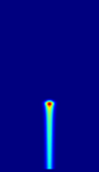
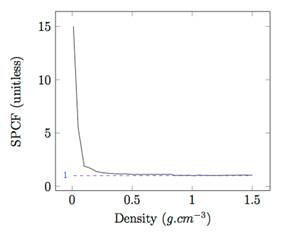
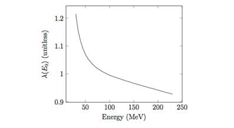
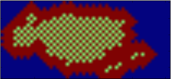
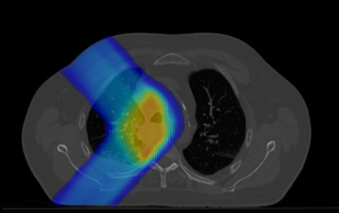
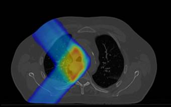
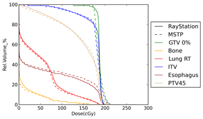
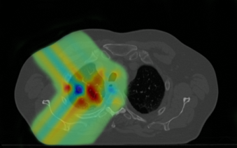
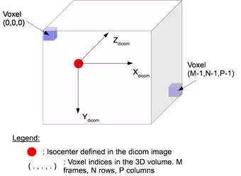
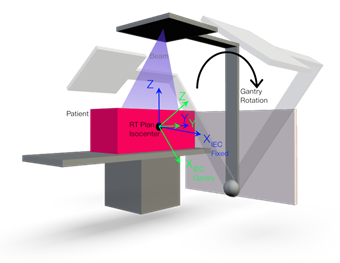

MSPT: Motion Simulator for
Proton Therapy
Table of Content
VIII. Source Code Documentation
IX. Use a new CT number to density table
XI. Add new stopping power data
XII. Change the stopping power correction factor
XIII. Change the dose correction factor
XIV. Use new proton
machine configuration
Foreword
MSPT (Motion Simulator for Proton Therapy) is a research tool (under GNU
GPL v3 licence) to study the impact of motion during the delivery of a proton
therapy treatment. The simulations rely on DICOM
files: the patient CT image along with a file defining structures in the
patient body, the treatment plan and optionally the expected dose distribution.
It simulates the spot scanning technique, used in proton therapy, with an
analytical beam model introduced by Hong et al. [1].
Moreover, modifying some parameters (see here)
allow MSPT to match other spot-scanning proton machines.
Subversion:
(for gmail users) : $ svn checkout https://mspt.googlecode.com/svn/trunk/ mspt --username
yourLogin@gmail.com
(for non gmail users) : $ svn
checkout http://mspt.googlecode.com/svn/trunk/ mspt-read-only
or
Download:
.zip file here
1.
Mac OS X or
Linux (Currently, only Unix systems have been tested)
2.
Python 2.7 and
the following python packages.
3.
Numpy 1.7 : http://www.numpy.org
4.
Scipy 0.14 : http://www.scipy.org/about.html
5.
Matplotlib 1.3
: http://matplotlib.org/
6.
PyDICOM
0.9.8 : https://code.google.com/p/pydicom/
Note 1: to install easily python packages you can
use the tool « pip »:
$pip install SomePackage
Note 2: For Windows users: not compatible yet.
Build the C/C++ extensions (OS X, Linux):
Go to : MSPT-MotionSimulatorForProtonTherapy/src/trunk/
$ cd MSPT-MotionSimulatorForProtonTherapy/src/trunk/
Then run the shell script buildCPP.sh:
$./buildCPP.sh
General simulation in MSPT :
1.
Go to : MSPT-MotionSimulatorForProtonTherapy/src/trunk/
$ cd MSPT-MotionSimulatorForProtonTherapy/src/trunk/
2.
Start a
simulation:
trunk
$ python m mspt.simulator.simulatorMSPT <CTFolder> <RPFile>
<RSFile> [<RDFile>] [<configFile>]
Inputs :
CTFolder : Path to the DICOM CT series directory.
RPFile : Path to the DICOM treatment plan file (RP
DICOM file).
RSFile : Path to the DICOM structure set file (RS DICOM
file).
[RDFile] : (optional) Path to the DICOM dose grid file
(RD DICOM file).
[configFile] : (optional) Path to the MSPT
configuration file.
Note: the inputs order does not matter.
A simple simulation for a static patient:
You can perform a simple simulation in MSPT where the simulator will be
configured with all the default values. The resulting delivery will be for a
static patient and the output data will be stored in MSPT-MotionSimulatorForProtonTherapy/src/Data_Simulation/:
trunk $python m mspt.simulator.
simulatorMSPT <CTFolder>
<RPFile> <RSFile> [<RDFile>]
A simple simulation for a moving patient
(dynamic delivery):
trunk $python m mspt.simulator.
simulatorMSPT <CTFolder>
<RPFile> <RSFile> [<RDFile>] --motion
An advanced simulation:
trunk $python m mspt.simulator.
simulatorMSPT <CTFolder>
<RPFile> <RSFile> [<RDFile>] <configFile>
In order to run an
advanced simulation you need to create a configuration file, which aims at initializing MSPT
global variables.
The running time of MSPT
will depend on different parameters:
1.
The size and
resolution of the input CT image: the voxel spacing of the CT image is used as
the spacing used for the dose distribution calculation. So if your CT
resolution is 3mm x 3mm x 3mm, it will run faster than 1 mm x 1 mm x 1mm since this would induce more
voxels to process.
2.
The size of the
field of view: when a RD dicom file is provided as an input, the field of view
of the dose distribution computation (i.e., the part of the CT volume used) is
defined by the field of view of this RD dicom file. If this file is not present
in the input, the dose distribution will be computed for the entire CT volume,
so for all voxels.
In order to test the
simulator we provides 2 datasets in the folder MSPT-MotionSimulatorForProtonTherapy/SampleData/:
1st dataset: the simulation of a 140MeV proton pencil
beam in a water phantom.
2nd dataset: the simulation of the delivery of few beams in a cube composed of 2
media.
Each dataset is composed
of a set of Dicom images, and a treatment plan (RP, RS, RD) along
with a configuration file for a static simulation in both datasets and a
dynamic simulation in the second dataset Figure 1 shows images of the
respective resulting dose distributions.
|
 |
|
|
(b) |
|
|
|
|
|
(a) |
(c) |
Figure 1: Dose distribution images of the sample data: (a) for the
proton pencil-beam in water, (b) for the static irradiation of a cube and (c)
the dynamic irradiation of the cube. Image (a) is along the Z dicom axis
(frames axis) , and images (b) and (c) are along the Y dicom axis (rows axis)
The configuration file
can either be '.txt' or '.py'. This last type allows the use of python code to
set the variables.
General rule to set variables:
Set a string: myVariable = MyString
Set a numerical value: myVariable = myValue
Set a list: myVariable
= [item1 , item2,
]
Set a Boolean: myVariable
= True or myVariable
= False
MSPT global variables:
All the following variables are used in MSPT. They can be modified to
control MSPTs behavior. To write the configuration file you only need to set
the variables that should not be set to the default value.
Note: Every time MSPT is running, it stores the
configuration used into a text file available in the simulation folder.
|
Variable |
Usage condition |
Description |
Default setting |
Comments |
Only for dynamic Delivery |
|
mainPath |
|
String defining the path where the
simulation directory will be created. |
'../Data_Simulation/' |
|
|
|
nameSimulation |
|
Corresponds to the path where the simulation
output data will be saved. |
'runSimulStatic/'' for a static delivery
'runSimulDynamic/' for a dynamic simulation |
|
|
|
nameProfilage |
|
Name of the profilage file created using the
package cProfile. This profilage data can be after studied
using the cProfile package in python or with the profilage viewer runsnake. |
'profilagerunSimulStatic.profile' for a
static delivery 'profilagerunSimulDynamic.profile' for a dynamic delivery |
|
|
|
removeProfilageData |
|
True if the user wants to delete the profilage
data when the simulation ends. False otherwise. |
True |
|
|
|
stdOutErrToFile |
|
True or False. If True the standard output
and error are redirected to a text file in the simulation directory. |
False |
|
|
|
zipSavedData |
|
True or False. If True, the simulation
directory containing the output data is zipped in 'maintPath'. |
True |
|
|
|
copyZip |
|
True or False. If True the zip file is
copied to the 'pathToCopyZip' directory. |
True |
|
|
|
pathToCopyZip |
|
String defining where to copy the zip file. |
'../Data_Zip/' |
|
|
|
typeFloat |
|
The type of numpy float to be used:
'float32' or 'float64' |
'float64' |
Note that float32 is less accurate than float64 and can induce
differences especially in non static deliveries. But float64 requires more
memory. |
|
|
emailUser |
|
To send an email informing that the simulation
succeeded (attachment: the DVH(s) and the data printed in the standard
output) or if the simulation failed. The setting is the e-mail address
sending the e-mail. |
None |
|
|
|
emailPwd |
|
E-mail password |
None |
|
|
|
emailSMTP |
|
E-mail SMPT server address. |
None |
For gmail: "smtp.gmail.com" |
|
|
emailSMTPPort |
|
SMPT server
port. |
None |
For gmail: 587 |
|
|
emailRecipient |
|
Recipients
e-mail address. |
None |
|
|
|
|
True or False. If True the delivery is
performed for a static patient. Otherwise for a
moving (dynamic) |
True |
|
|
|
|
|
String defining the set of dept-dose curves
to use. Currently no other depth-dose curve data has been added. |
'RayStation' |
To add other depth dose curves. See here for more information. |
|
|
|
|
True or False (default). If True it displays
the evolution of the energy layer as a 2D array representing the beam
positions. |
False |
See the module scanningPath.py in the
package mspt.dicomReader for more details. |
|
|
|
|
True to save the CT dicom image as tiff
image files, False otherwise. |
True |
|
|
|
|
If saveCTImage is True |
List of the axis along which the images of
the CT Dicom series will be saved. Possible values are 'x' (i.e. the images
are stored along the column axis of the dicom image), 'y' (i.e. the images
are stored along the rows axis of the dicom image), 'z' (i.e. the images are
stored along the frame axis of the dicom image - default). |
[z] |
Examples: listSaveCTImageAlong = [], or
listSaveCompDoseAlong = ['x'] or listSaveCompDoseAlong = ['x','z']
|
|
|
|
|
False to save the 3D density array as a set
of png images. True otherwise. |
True |
|
|
|
|
If skipSaveDensityImage
is False |
List of the axis along which the density
images will be saved. |
['z'] |
|
|
|
|
If skipSaveDensityImage
is False |
True if the user wants to store the density
3D array in a cPickle structure (this allows to have access to
the 3D numpy array outdise the simulation). False otherwise. Moreover, if
False and the patient is moving it will store the 3D density array every time
the array is updated. |
False |
|
|
|
|
|
False to save the 3D relative stopping power
array as a set of png images. True otherwise. |
True |
|
|
|
|
If skipSaveStpPwrImage is
False |
List of the axis along which the relative
stopping power images will be saved. |
['z'] |
|
|
|
|
If skipSaveStpPwrImage is
False |
True if the user wants to store the rel.
stop. Pwr. 3D array in a cPickle structure. |
False |
If the patient moves (and variable True) it
only stores it once. |
|
|
|
|
False to save the 3D radiological depth
array as a set of png images. True otherwise. |
True |
|
|
|
|
If skipSaveDeff is False |
List of the axis along which the
radiological depth images will be saved. |
['z'] |
|
|
|
|
If skipSaveDeff is False |
True if the user wants to store the rel.
stop. Pwr. 3D array in a cPickle structure. |
False |
If the patient moves (and variable True) it
stores the array at every update |
|
|
|
|
False to save an image of the dose
distribution of each beamlet simulated. True otherwise. |
True |
|
|
|
|
If skipSaveBeamlets is
False |
True to save the dose distribution of each
beamlet (a 3D numpy array) in a cPickle structure. |
False |
|
|
|
|
|
List of the axis along which the computed
dose distribution images will be saved. |
['z']. |
This variable is also used to store the
images of the density and the pencil beam dose distribution in a dynamic
delivery if the variable 'storeInterDoseDens' (defined below) is True. |
|
|
|
|
True to save the computed dose distribution into
a RD dicom file. False otherwise. |
True |
|
|
|
|
If saveCompDoseAsDcm is
True |
Name of the output RD dicom file for the
computed dose distribution. |
'RD_CompDose_MSPT.dcm' |
|
|
|
|
|
True to save the expected dose distribution
into a RD dicom file (False
otherwise). |
True |
This is useful if the input dose grid is
resampled to the voxel spacing of the input CT dicom series. Moreover, this
can only be done if the user provided an input RD dicom file. |
|
|
|
nameRefDose |
If saveRefDoseAsDcm is
True |
Name of the output RD dicom file for the
expected dose distribution. |
'RD_RefDose.dcm' |
|
|
|
|
True to save the expected dose distribution
as png image files, False otherwise. |
True |
|
|
|
|
listSaveRefDoseAlong |
If saveRefDose True |
List of the axis along which the expected
dose distribution images will be saved. |
[z] |
|
|
|
dvhRelativeVolume |
|
True to convert the volumes into relative
volumes in the dose volume histograms. False otherwise. |
True |
|
|
|
displaySliceOrderingInfo |
|
True to display the order and positions (in
mm) of the CT dicom slices. False otherwise. |
False |
|
|
|
exportSliceOrderingInfo |
|
True to export the order and positions (in
mm) of the CT dicom slices into a csv file. False
otherwise. |
False |
|
|
|
|
True to store binary matrices representing
the patient structures (VOIs: Volumes of Interest) into cPickle structures. |
False |
|
|
|
|
|
Number of protons per Monitor Units (MU). |
1e9 |
|
|
|
|
|
True to import and used new mass stopping power
data. False otherwise. |
False |
See here for
more information. |
|
|
|
|
Name of the data used as the correction
factor for the stopping power. If MSPT
cannot load the file indicated all the factors are set to 1.0. |
'MSPT' |
See here for more details. |
|
|
|
|
Name of the data used as the dose correction
factor. If MSPT cannot load the file indicated all the factors are set to
1.0. |
'MSPT' |
See here for more details. |
|
|
|
|
Name of the data used to convert CT numbers
to mass density. |
'MSPT' |
See here for
more details. |
|
|
|
|
Time unit to simulate the dynamic delivery
(moving patient) expressed in seconds. It corresponds
to the time resolution. |
1e-3 |
|
X |
|
|
typeMotion |
|
The type of motion applied to the patient:
'motionNoisyCos', 'motionCos', 'motionBreathHiccup', 'motionBreathCough' or 'motionRecorded'. |
'motionCos' |
See here for more information. |
X |
|
If typeMotion is
motionRecorded |
The filename ('NAMEFILE.txt') of the motion
information. If the name is not provided the typeMotion is changed to
motionCos. |
None |
See here for more information. |
X |
|
|
If typeMotion is not motionRecorded |
List of the motion period (in seconds) along
x, y, and z axis in the IEC fixed coordinate system. |
[4.0, 0.0, 4.0] |
X_IEC fixed= X_Dicom, Y_IEC fixed = Z_Dicom,
Z_IEC fixed = -Y_Dicom. |
X |
|
|
If typeMotion is not motionRecorded |
List of the motion amplitude (in cm) along
x,y, and z axis in the IEC fixed coordinate system. |
[1.0, 0.0, 1.0] |
|
X |
|
|
If typeMotion is not motionRecorded |
List of the motion initial phase (in rad.)
along x, y, and z axis in the IEC fixed coordinate system. |
[0, 0, 0] |
|
X |
|
|
If typeMotion
is 'motionNoisyCos', 'motionBreathHiccup' or 'motionBreathCough' |
List of standard deviations (in seconds) for
the gaussian distributions used to simulate changes (noise) in the motion
periods along x,y, and z axis in the IEC
fixed coordinate system. |
[0, 0, 0] |
|
X |
|
|
If typeMotion
is 'motionNoisyCos', 'motionBreathHiccup' or 'motionBreathCough' |
List of standard deviations (in cm) for the
gaussian distributions used to simulate changes (noise) in the motion
amplitudes along x, y, and z axis in the IEC
fixed coordinate system. |
[0, 0, 0] |
|
X |
|
|
ctPadding |
|
True to add margins of a specified density
(see 'paddedCTValue' ) around the input CT image. |
True |
This is useful, when the moving patient can
be outside of the bounding box formed by the borders of the CT image (i.e,
the field of view). |
X |
|
padValueFRC |
If ctPadding is True |
Numpy array of 3 integer values: [ number of
frames to add , number of rows to add, number of columns to add]. |
[10, 0, 10]. |
For example: [ 0, 0, 10] will add 10 columns
to the right of the CT array and 10 columns to the left of the CT array. |
X |
|
paddedCTValue |
If ctPadding is True |
The value in CT number (Hounsfield
Units - HU) to use
to pad the CT image. |
-1000 |
For example: air = -1000 HU, water = 0 HU. |
X |
|
storeInterDoseDens |
|
True to store the density image and the dose
distribution of a single beam when the patient is moving while being
irradiated. False otherwise. |
False |
It uses the variable 'listSaveCompDoseAlong'
to save the images. |
X |
|
motionDuringBeam |
|
True to let the patient move while being
irradiated by a pencil beam. False otherwise. |
True |
|
X |
|
compensationDynamic |
|
True to allow motion compensation, False
otherwise. |
False |
Here to know more about motion compensation. |
X |
|
If compensationDynamic is
True |
List of the standard deviations for the
motion monitoring accuracy (in cm) along x, y, and z axis in the IEC
fixed coordinate system. |
[0.1, 0, 0.1] |
Here to know more about motion monitoring. |
X |
|
|
If compensationDynamic is
True |
List of the average for motion monitoring
accuracy (in cm) along x,y, and z axis in the IEC
fixed coordinate system. |
[0.1, 0, 0.1] |
|
X |
|
|
If compensationDynamic is
True |
Time (in seconds) needed to measure the
patient displacement with the monitoring system. |
1e-3 |
|
X |
|
|
findStartPos |
If compensationDynamic is
True |
Find a good starting position in the energy
layer being delivered. |
False |
See the module scanningPath in the package
mspt.dicomReader for more information. |
X |
|
nameNewRPFile |
If compensationDynamic is
True |
Name of the new RP Dicom file created based
on the scanning path generated from the compensation. |
'RPFile_Compensation.dcm' |
|
X |
|
addMargins |
If compensationDynamic is
True |
Add beam position (with weight 0 MU) around
the beam positions (position map) provided by the input RP Dicom file. |
False |
Here for more information about map margins. |
X |
|
marginsParam |
If compensationDynamic is
True |
A list of positive real values. It
represents the width of the margin in mm along the [x,y,z] axis in the IEC Gantry coordinate system. |
[10, 0, 10] |
|
X |
|
updateMargins |
If compensationDynamic is
True |
Controls whether the position map with the
margins is updated between repaintings. |
True |
From one repainting to another, the position
map of an energy layer can change depending on the spots that have been
entirely delivered. |
X |
|
unlimitedRescanning |
|
True to allow an unlimited number (the
maximum, however, is set to 32767 - max int16 - repaintings to avoid infinite
loops) of repainting per energy slice. False otherwise. |
False |
Repainting (or rescanning) is the act of
irradiating more than once target points. |
X |
|
repaintingFactor |
If unlimitedRescanning is
False |
Repainting
factor |
1 |
|
X |
|
sliceRepaint |
|
Type of slice repainting method. Types of
repainting: 'IsolayerRepaint', 'ScaledRepaint' or 'FullWeightRepainting' |
'ScaledRepaint' |
Scaled repainting: All the beam weights are
divided by a constant. |
X |
|
volumeRepaint |
|
Type volume repainting method. Types:
'Volumetric' and 'NonVolumetric'. |
'NonVolumetric' |
Volumetric repainting: the target volume is
scanned across a first time before starting a second scan. Non-Volumetric:
each energy layer is scanned several times (defined by the repainting factor)
before going to the next energy layer. |
X |
|
evaluateDiffStatDyna |
|
True to show and store statistics about the
differences between dose distributions at a beam position when the patient is
moving and when he is static. |
False |
|
X |
|
|
True to make MSPT behave like a synchrotron (i.e.,
pulsatile proton delivery, time needed to refill the synchrotron and long
time to change the energy). Otherwise (False) it behaves like a cyclotron
(i.e., continuous proton delivery the time to change the energy is shorter. |
True |
|
X |
|
|
If synchrotron is True |
Length (in seconds) of a proton spill. |
5 |
|
X |
|
|
|
Time (in seconds) to change the beam energy. |
2.1 ( if synchrotron is True) 50e-3 ( if synchrotron is False). |
|
X |
|
|
|
Time (in seconds) needed to stabilize the
beam position. |
5e-3 |
|
X |
|
|
|
Lateral scanning speed of the beam (in
cm/s). |
1000 |
|
X |
|
|
|
Vertical scanning speed of the beam (in
cm/s). |
1000 |
|
X |
|
|
|
Gantry rotational speed in degrees / min. |
360 |
|
X |
|
|
|
Beam intensity (or extraction rate), i.e.
number of protons per second being delivered. |
6.8e10 |
|
X |
VIII.
Source Code Documentation
The local code documentation:
MSPT-MotionSimulatorForProtonTherapy/doc/_build/html/index.html
The online code documentation online: here.
IX.
Use a new CT number to density table
The data used to convert
CT numbers to mass density can be imported in MSPT in order to use another
table than the default one. To do this, proceed as follows:
1.
Create a new tab
delimited text file named 'ct_to_density_NAMEDATA.txt'. For example by
default in MSPT, NAMEDATA is 'MSPT', so the default data used is named
'ct_to_density_MSPT.txt'.
a.
In the first
line, enter: 1st column: 'CT_Number' , 2nd column:
'Mass_Density_g.cm3'
b.
Then for each row enter:
1st column: the CT number (in increasing order), 2nd
column: the corresponding mass density.
2.
Place the file
in the folder '/RefData/CTToDensData/'
3.
Set the MSPT
configuration nameCTToDensTable
variable: nameCTToDensTable ='NAMEDATA'
MSPT is provided with depth-dose
curves generated from simulation in RayStation. However, if
one wants to add new depth-dose curves, please follow the procedure:
1.
Create a new
directory : MSPT-MotionSimulatorForProtonTherapy/src/trunk/RefData/DepthDoseData/NAME_NEWFOLDER
2.
Add the depth
dose curves in this new directory. Please, note that the depth-dose curves must
be stored in .csv files:
a.
1 file per
energy
b.
The name of each
file must respect this pattern: 'depthDoseData-xxx_xxMeV*.csv' where the x
corresponds to digits of the energy and * can be any string. For example:
depth-dose curve files for 10.20MeV: depthDoseData-010_20MeV.csv or depthDoseData-010_20MeV_SomeInformation.csv
or depthDoseData-010_20MeV_NAME_NEWFOLDER.csv
c.
Each file must
be organized as follows: 1st row: the depths in cm, 2nd
row the corresponding dose in Gy.cm2.
3.
To use these
depth-dose curves set the variable ddCurves, of the
configuration file, to 'NAME_NEWFOLDER'.
XI.
Add new stopping power data
MSPT is provided with
Mass Stopping Power tables obtained from the PSTAR database for several media:
air, adipose, water, muscle and bone. However, if one wants to add mass
stopping power data here is the procedure:
1.
Create the table
(Energy, Mass stopping power) into a tab delimited .txt file (1 file per
medium). :
a.
The first line
must contain the headers: 1st column: 'Kinetic Energy MeV' , 2nd
column: 'Total Stp. Pow. MeV cm2/g'
b.
Then, for each
new line: 1st column: the
energy in MeV , 2nd column: the corresponding mass stopping power in
MeV.cm2/g.
Please note that the energies must be stored in increasing order.
c.
Once all the
energies and mass stopping powers have been entered, add a new line where: 1st
column: medium density in g/cm3 and 2nd column: -1.0.
d.
The name of each
file must respect the pattern: 'MassStopPwrData-MediumName.txt'
2.
Once all the
files have been created (1 per medium!), add these files into the folder MSPT-MotionSimulatorForProtonTherapy/src/trunk/RefData/MassStoppingPower_NewData/
3.
Set the
configuration variable importNewMassStopPwr to True to be able to use this new mass stopping power data.
XII.
Change the stopping power correction
factor
What is it?
The correction factor is
a multiplicative factor applied to the stopping power based on the density (see
Figure 2).

Figure 2: Default stopping power correction factor (SPCF) as a function
of mass density used in MSPT.
It is used to compensate
the lack of stopping power information in the range 1.2x10-3 g.cm-3
0.9g.cm-3.
How to obtain the correction factors?
1.
Create several CT
data sets (1 per density evaluated) where the entire CT volume corresponds to 1
single density.
2.
For each density
evaluated:
a.
Simulate a
pencil beam of known energy in the CT volume without any correction factors (or
a factor of 1.0 for all the densities).
b.
Simulate the
same pencil beam in the same volume in the treatment planning system you want
to match.
c.
In both
resulting dose grids measure the distance between the beginning of the ray in
the medium and the Bragg Peak
d.
Calculate:
factor = d1 / d2, where d1 is the distance
measured in the dose grid obtained from the treatment planning system and d2
the distance obtained in MSPT. Hence you have the factor for the density
evaluated.
Note 1: For very low densities, you will need to add
a known thickness of water in your CT volume such that the ray stops in this
thickness of water, while ensuring that the distance in the evaluated media in
longer that in the water. If this is not done, the beam will exit at the other
side of the CT volume and the distances wont be measurable. The factor is then calculated as: factor = 1
+ ( dw2-dw1)/(dm1*Smw) , where dw1
is the distance between the entrance in the thickness of water and the Bragg
Peak (that must be in the water)
obtained from the treatment planning system and where dw2 is
the equivalent obtained in MSPT. dm1 is the distance between the
entrance of the beam in the CT volume and the slab of water (i.e., the length of the beam in the
evaluated medium). Finally, Smw is is the relative stopping power of
the medium evaluated (relative to water).
Note 2: Please note, also that the grid resolution
can have an impact on the accuracy. If the grid resolution, is too low, the
factor can be a starting point to search for the correct factor.
To change the correction factors for the stopping
power:
1.
Create a table
with 2 columns into a tab delimited '.txt' file:
a.
The first line
must contains the headers: 1st column: 'Density', 2nd
column: 'correcFactor'
b.
Then, for each
new line: 1st column: the
density in g.cm-3 , 2nd column: the corresponding
correction factor unitless.
c.
The filename
must respect this pattern: 'dataCorrecFactorStopPwr_NAMEDATA.txt' where
'NAMEDATA' will be the name you want to give to this data. For example, by
default the name for the correction factors used in MSPT is 'MSPT', so the file
name is 'dataCorrecFactorStopPwr_MSPT.txt'
2.
Place the file
in the folder MSPT-MotionSimulatorForProtonTherapy/src/trunk/RefData/CorrecFactor_StopPwr/
3.
Set the MSPT
configuration variable nameStopPwrCorrecFactor to 'NAMEDATA'.
Note: When
loading the data, if MSPT cannot find the indicated file the factor is set to
1.0 for all the densities. Hence, to use a factor equal to 1, just set the
variable:
nameStopPwrCorrecFactor=' ' (the empty
string)
XIII.
Change the dose correction factor
What is it?
The correction factor is
a multiplicative factor applied to the entire dose distribution of a pencil
beam. It depends on the energy (see Figure 3).

Figure 3: Default dose correction factor as a function of energy, used
in MSPT.
This factor accounts of
the change of monitor unit (MU) response at different proton energies.
How to obtain the correction factors?
1.
Create a CT data
set of water.
2.
For each energy
evaluated:
a.
Simulate a
pencil beam of 1 MU in the CT volume without any correction factors (or a
factor of 1.0 for all the energies).
b.
Simulate the
same pencil beam in the same volume in the treatment planning system you want
to match.
c.
In both
resulting dose grids calculate the mean dose.
d.
Calculate:
factor = mean1 / mean2, where mean1 is the mean dose
obtained from the treatment planning system and mean2 the mean dose obtained in
MSPT. Hence you have the factor for the energy evaluated.
To change the dose correction factors:
1.
Create a table
with 2 columns into a tab delimited '.txt' file:
a.
Then fist line
must contains the headers: 1st column: 'Energy', 2nd column:
'Factor'
b.
Then, for each
new line: 1st column: the
energy in MeV, 2nd column: the corresponding correction factor
unitless.
c.
The filename
must respect this pattern: 'doseCorrecFactor__NAMEDATA.txt' where 'NAMEDATA'
will be the name you want to give to this data. For example, by default the
name for the correction factors used in MSPT is 'MSPT', so the file name is
'doseCorrecFactor_MSPT.txt'.
2.
Place the file
in the folder MSPT-MotionSimulatorForProtonTherapy/src/trunk/RefData/DoseCorrecFactor/
3.
Set the MSPT
configuration variable nameDoseCorrecFactor to 'NAMEDATA'
Note: When loading the
data, if MSPT cannot find the indicated file the factor is set to 1.0 for all
the energies. Hence, to use a factor equal to 1, just set the variable:
nameDoseCorrecFactor = ' '
(the empty string)
XIV.
Use new proton machine configuration
MSPT uses proton machine
settings found in the literature or obtained from simulations in RayStation.
However, to match other treatment planning system or other delivery machines,
these settings can be modified with the variables: synchrotron, protPerMU,
beamIntensity, spillLength,
timeEnergyChange, spotSettlingTime,
lateralScanningSpeed, verticalScanningSpeed, speedGantryRotation.
Moreover, changing the
CT number to density conversion table
(see here), adding new depth-dose curves (see here), adding new mass stopping power data (see here), changing the data being used for the stopping
power correction factor (see here)
and changing the dose correction factors (see here)
can also modify the behavior of the simulator to match any desired treatment
planning system.
One of the main objective of MSPT is to simulate the
delivery of a proton therapy treatment to a patient moving during the delivery
(intra-fraction motion). To reach this goal, we use a low time resolution
(controlled by the variable unitTimeForDelivery), which allows frequent
updates of the patient position: by default the time resolution is 1ms.
Moreover, to simulate the motion we apply a motion function to the patient body
time dependent that provides the position of each elementary volume of the
patient over time.
Currently, the motion is
simulated using a rigid body transformation of the patient based on a breathing
model [2,3,4] relying on a cosine function. We
developed three different types of breathing motions in addition to the
original one:
Basic breathing motion:
This motion corresponds to a simple cosine function (motionCos.py in the
package mspt.motion). The amplitude in the x,y,z directions is set by the
variable arrayAmpl,
the period is set by the variable arrayPeriod, and the initial phase is set by arrayPhase.
Breathing motion with random variations
This motion corresponds to a cosine function to which is added random
noise for the period and the amplitude (motionNoisyCos.py in the package
mspt.motion). The cosine function is controlled by the same parameters than the
basic breathing motion. The variations of breathing amplitude and period, are
modeled by normal distributions whose mean value is provided resp. by arrayAmpl and arrayPeriod,
and the standard deviation is provided by arrayStDevAmpl and arrayStDevPeriod . The amplitude
variation and the period variation are applied every new breathing cycle.
Breathing motion with hiccup
This motion is derived from the breathing motion with random variations
but a model of hiccup is added (motionBreathHiccup.py in the package
mspt.motion). The hiccup is modeled as a periodical event starting at a random
date, having a random breathing cycle length, a random number of cycles (for
ease we set this number between 1 and 10: the value can be changed in
motionBreathHiccup.py with the global variable nbMaxHiccup), which determines
the ending date of the hiccup. The amplitude of a hiccup is the sum of the
initial amplitude (without hiccup) plus a random value defined by a normal
distribution (mean = 'magnitude'/2
and stdev = 'variationsMag'/2).
Breathing motion with cough
This motion is derived from the breathing motion with random variations
but a model of cough is added (motionBreathCough.py in the package
mspt.motion). The cough is modeled as a single event happening at a random
date. The amplitude of a cough is the initial amplitude (without cough) minus a
random value defined by a normal distribution (mean = 'magnitude'/2 and stdev =
'variationsMag'/2). The reason why we are using a "minus" instead of
a "plus" is that usually when someone coughs his rib cage is compressed.
Recorded motion
If the user wants to import motion information from a recording, this
motion allows that. To do so create a text file containing the motion
information as follows:
1.
The file must
contain 4 columns. The first row should be: 'Date' , 'X_displacement', 'Y_displacement'
and 'Z_displacement'. The displacement should be expressed in the IEC fixed
coordinate system.
2.
Then fill each
row with the information for each date recorded. The dates must be in seconds
and the displacements in cm. The first date provided should be zero seconds.
3.
Save a file as a
tab delimited 'NAMEFILE.txt' file and place it in /RefData/RecordedMotions/
4.
Set the MSPT
configuration variable fileRecordedMotion = 'NAMEFILE.txt' and set the variable
5.
Set the typeMotion
configuration variable to 'motionRecorded'.
New motions types can also be added to MSPT. To do so, will need to implement a new class in a new .py file. Then
in motionManager.py (in the package
motion) add the name of the created class (the first letter must be in lower
case) in the global variable 'motionTypes' . The new class must implement 'getDisplacementVectorAtTime(timer)' to
define the displacement vector at time = timer. One could decide to return a 3D
matrix containing local displacement vectors (In such case patient.patient.py
and scanning.deliverySimulation_Static_Dynamic.py should be adapted for deformable
transformations. The 'history' attribute of MotionManager should also be
adapted). It must also implement '__str__'
to provide information about the motion in addition to the __init__ function.
MSPT uses a motion
compensation technique currently developed for 2D motions and being still investigated.
The compensation principle:
We assume the current pencil-beam position being (x1, y1)
with an energy E0. If the patient is static, this beam will target,
for example, the spot in the patient located at the Bragg Peak
that will be considered as the target spot T1 . The beams weight
(equivalent to the time spent at this position) at this position is w1.
Now lets assume that in the same energy layer, another beam-position (x2 ,
y2) target the spot T2 with a weight w2.
We say that the beam position (x1, y1) of the
energy layer E0 can be compensated if for a given displacement
vector (dx, dy) of the patient body, there exists (x2
, y2) - whose weight w2
> 0 in the neighborhood of the position (x1-dx , y1-dy)
for the same energy layer. If it can be compensated, it will deliver w2
MU instead of w1.
MSPT simulates motion monitoring, in order to take
into account the delay generated by the monitoring during the delivery as well
as the accuracy of the motion measurement.
To simulate the motion monitoring at a time t, random variations (on the X, Y and Z
axis) are added to the true displacement vector at time t. These random variations correspond to the accuracy of the
monitoring system and can be controlled with the variables measurementStdev and measurementAvg
which parameterize the normal distributions. Once the measure of the
patient displacement has been simulated, it is returned to be used for the
compensation. In order to take into account that making the measurement is not
instantaneous, the timer representing the time during the delivery is
incremented by the delay needed by the monitoring system. This delay is set as
a constant and can be modified in the configuration file by the variable timeMeasureDisplacement.
The monitoring occurs every time the beam position is
modified. Therefore, if the patient moves during the delivery of a single
pencil beam the monitor cannot observe the motion. For example, if the beam is
at (x0,y0) and needs to stay at this position 10ms to be
able to deliver 1MU, and if the time unit considered (variable unitTimeForDelivery)
is 1ms, then during these 10ms, the patient position will be updated 10 times,
but the monitoring system will not be able to consider these motions. This
constraint is motivated by the fact that it wouldnt be realistic to let the
monitoring system take a measurement every time unit.
The scan spot position map represents the beam
positions of an energy layer in a 2D view (see Figure 4 green spots). The RP
Dicom file provides these positions. In the context of the compensation, we add
margins around the initial position map, which corresponds to beam position of
weight 0MU (see Figure 4 red spots).

Figure 4: Example of the scan spot position map for an energy layer. In
green, beam positions from the treatment plan (original scan spot position
map). In red, beam positions of the margin added.
MSPT provides different
outputs to be able to assess the quality of the delivery both visually and
quantitatively.
Outputs:
1.
It is possible to save the CT Dicom series, the density matrix, the
relative stopping power matrix and the radiological depth into png images with
the variables: saveCTImage
, skipSaveDensityImage, skipSaveStpPwrImage
and skipSaveDeff.
In addition, the density, relative stopping power and radiological depth matrices
can be saved in cPickle structures to be able to work easily in Python with
these matrices after the simulation. This is possible with variables: saveDensCPKL,
saveStpPwrCPKL
and saveDeffCPKL.
2.
Each patient structure defined in
the RS Dicom file is stored in sets of black and white .png images.
3.
The dose distributions, computed and
expected (if provided as an input), can be stored to a RD Dicom file with the
variables saveCompDoseAsDcm and saveRefDoseAsDcm.
4.
They can also be stored as .png
images. The computed dose distribution is always stored as png images, but the
expected dose distribution is saved only if the variable saveRefDose is True.
5.
The dose distributions are also
saved in .csv files: 1 file per volume frame, for frames with non-zeros dose
values.
6.
Dose
Volume Histogram (DVH) data is saved in .csv files
for each patient structure defined in the RS Dicom file both for the expected
dose distribution and the computed one. The DVH plots are also saved as png
images.
7.
The hot and cold spots are saved as
png images and their repartition in the different patient structures is stored
in a text file.
8.
It is possible to save a png image
(1 frame only) of each single beamlet simulated along with the corresponding 2D
dose distribution computed for each of these beamlets with the variables: skipSaveBeamlets
and saveBeamletsCPKL.
9.
The energy received (in Joules)
received by each patient structure in the computed dose distributions and the
expected one.
10. For dynamic deliveries, the history of motions is saved in a .csv file
as a list of dates in seconds and the corresponding displacement along the x,y
and z axis.
Output examples
The following figures present images and a plot obtained from MSPT. For
figures 5,6,8 the overlay of the images has been done in another software, and
the colorization of binary masks, in Figure 5, as well.

Figure 5: Masks of the body structures overlaying a patient CT image:
lungs (orange), vertebral column bones (green), spinal cord (blue) and the
planning target volume (red).
|
 |
 |
|
(a) |
(b) |
|
|
|
Figure 6: Images of dose distributions computed in
RayStation (a) and in MSPT (b) overlaying a patient CT image image (transverse
plane located near the middle of the tumor).

Figure 7: Dose Volume Histogram for dose distributions
from RayStation and MSPT.

Figure 8: Image of hot and cold spots present in the
dose distribution of a moving patient overlaying the patient CT image
(transverse planes). Note: the percentage scale for hot (resp. cold) spots is
relative to the maximum (resp. minimum) value of the difference between dose
distributions of the static patient and the moving patient both simulated in
MSPT.
Dicom coordinate system:

IEC (International Electrotechnical Commission) coordinate systems:

Glossary
A Dose Volume Histogram (DVH) is a cumulative histogram for a specified
volume of interest (VOI). It represents the cumulative volume irradiated as a
function of the dose.
Unit to scale the linear attenuation coefficient of a medium compared to
the linear attenuation coefficient of water.
Depth in a medium, where the maximum of energy will be deposited by an
irradiating beam.
References
[1]
Hong L, Goitein M, Bucciolini M, Comiskey R, Gottschalk B, Rosenthal S, Serago
C, Urie M. A pencil beam algorithm for proton dose calculations. Physics in
Medicine and Biology 41:1305-1330, 1996.
[2]
R George, S Sastry Vedam, T D Chung, V Ramakrishnan, and Paul J Keall. The
application of the sinusoidal model to lung cancer patient respiratory motion.
Medical Physics, 32(9):28502861, 2005.
[3]
AE Lujan, EW Larsen, JM Balter, and RK Ten Haken. A method for incorporating
organ motion due to breathing into 3D dose calculations. Medical physics, pages
715720, 1999.
[4]
Joao Seco, Daniel Robertson, Alexei Trofimov, and Harald Paganetti. Breathing
interplay effects during proton beam scanning: simulation and statistical
analysis. Physics in medicine and biology, 54(14):N283 94, July 2009.
© Copyright 2014, Paul
Morel, LIGM, Univ. Paris-Est MLV, France.